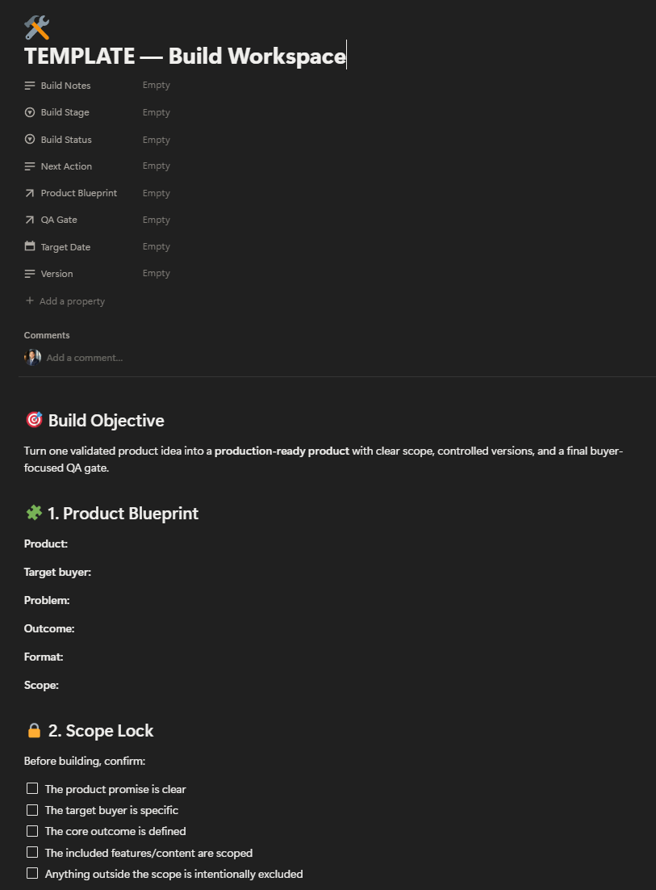
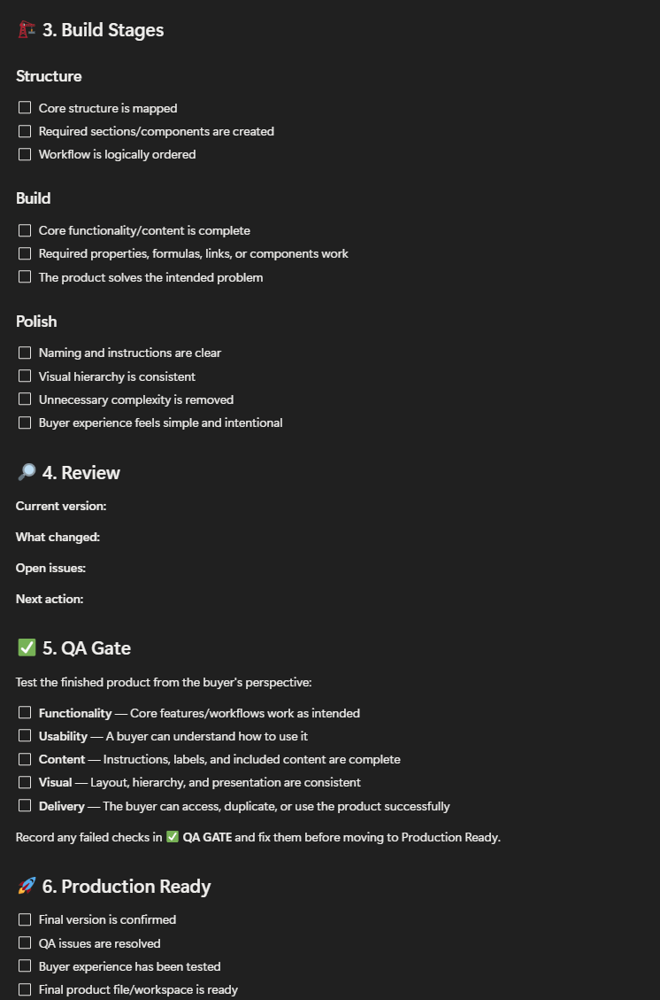

01 / BUILDFLOW
A structured approach to product development.
BuildFlow organizes product development through defined stages, from the initial blueprint and scope to review and production readiness.

